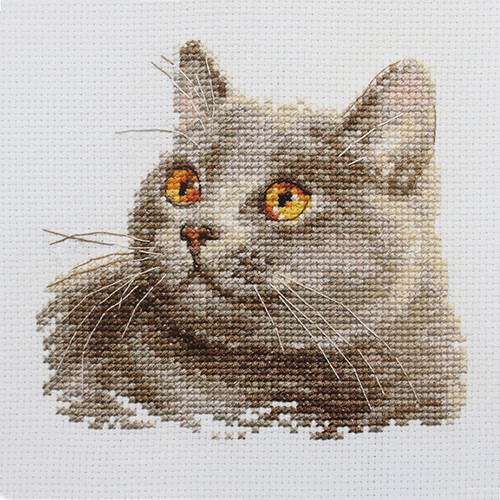
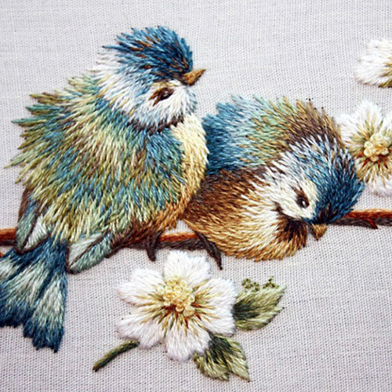
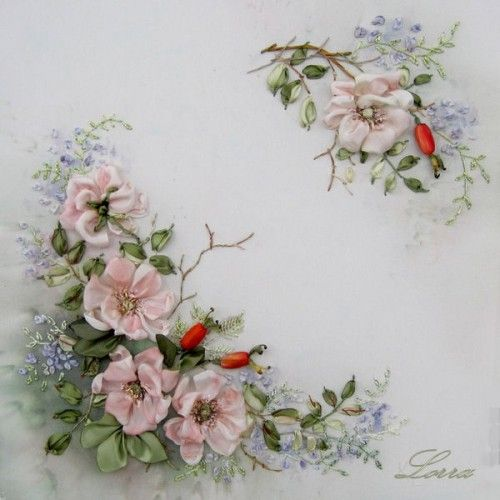
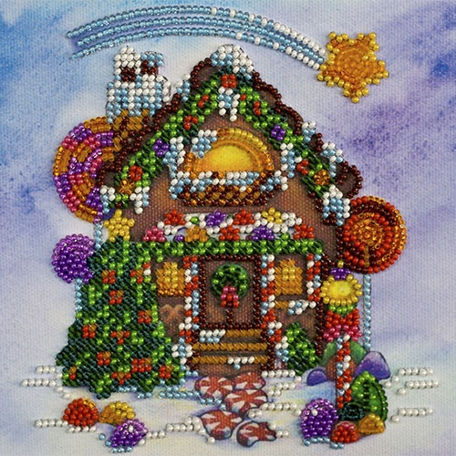

Вышивка крестом
Это способ вышивания рисунка на канве с помощью иглы и цветных нитей мулине или других нитей для вышивания, в том числе шерстяных, используется техника в полный крест или полукрест.Это вид рукоделия, искусство которого уходит корнями в эпоху первобытной культуры, когда люди использовали стежки каменными иглами при шитье одежд из шкур животных. Изначально материалами для вышивки были кожа животных, жилы, волокна конопли или шерсти, волосы.
Так как вышивание крестом производится при помощи иголки, служащей как бы острым продолжением или окончанием нитки: шерстяной, бумажной или шёлковой, то и иголка, пока она не стала металлической и не дошла до современного её усовершенствованного состояния, выделывалась из самых разнородных материалов: из дерева, кости, а в глубокой древности и у дикарей на это шли древесные иглы, рыбьи кости, щетина и прочее. Вышивают нитками, бумагой, шерстью, шёлком, золотом, с еребром, с использованием бусин, бисера, стекляруса, иногда настоящего жемчуга, самоцветных камней, блёсток, а также и монет (реже всего).
Вышивки Ирана и Индии отличаются множеством растительных мотивов, изображением птиц, животных и классических национальных литературных сюжетов. Вышивки Византии, отличающиеся красотой шёлкового шитья (золото, серебро), разнообразными узорами, оказали значительное влияние на развитие искусства вышивки крестом во многих странах Европы в период средневековья, когда появились свои уникальные расцветки, орнаменты, и техника вышивки крестом, индивидуальная для каждой национальности.

Вышивка гладью
Это вид вышивки, в которой стежки наносятся на ткань, полностью заполняя гладь полотна. В этой технике применяются различные виды швов и приёмов.
Одним из старейших швов, применяемых на Руси, является счетная гладь. Уже позднее была изобретена цветная перевить, гипюр, белая и цветная гладь, и прочие техники. На особой ткани, которая была редко соткана, выполнялся счетный шов. Для этого на материал клали пряжу одного цвета по количеству ее ниток и наполняли определенные участки геометрическими орнаментами. Вследствие этого выходили ритмичные узоры. Такая вышивка именуется счетной гладью. Помимо этого, ткань оформляли орнаментами из геометрических фигур швом «вперед иголку». Данная техника именовалась набором, либо «бранным шитьем», одно из направлений этой техники — орловский спис.
Техника вышивки крестом и полукрестом существовала еще в древние времена, а вот история происхождения вышивки гладью берет свое начало намного позднее. На плотной небеленой ткани красными нитками с малым количеством зеленой, желтой и синей пряжи выполняли фигуры зверей, птиц, рыб, людей, растительные узоры. Данная техника именуется верхошовной по той причине, что гладь выполняется исключительно по лицевой стороне, а с изнаночной остаются лишь небольшие стежки. Имеется у нее и иное наименование – владимирская гладь, по месту возникновения этой техники.

Вышивка лентами
Это вид художественного рукоделия, объёмного вышивания, с использованием иглы с большим ушком и шёлковых или атласных лент, с помощью которых на ткань (хлопок, габардин, органзу), зафиксированную в пальцах, наносится рисунок из лент различного цвета и ширины. Как правило, вышивают цветочные и растительные элементы, но мастера умеют вышивать замечательные картины и с животными, птицами, пейзажами. Вышивку лентами можно использовать для декорирования одежды, интерьера, создания оригинальных украшений.
История вышивки лентами берет свое начало с глубокой древности, уже тогда небольшие полоски ткани получили широкое распространение в быту, хозяйстве и рукоделии. Кроме этого они выступали в качестве прекрасного украшения, вплетенные в волосы, ленточки придавали девушки изящества. Тогда же в культуре практически всех народов была традиция отделывать одежду лентами самых разных цветов. Иными словами искусство вышивки лентами было заложено еще с глубокой древности и основывается на богатом опыте культур различных народов.
Вышивка лентами в том виде, какую мы знаем ее сейчас, появилась во Франции во времена правления французского короля Людовика XV, и сразу заняла достойное положение среди иных видов прикладных искусств. Культура вышивки лентами распространилась по миру и стала настоящей отдушиной для модниц всего мира, с помощью этого искусства можно было украсить и сделать необычайным любое платье, каждое из которых становилось настоящим произведением искусства.

Вышивка бисером
Вышивка бисером известна ещё с глубокой древности. С давних времен русские умелицы восхищали своим великолепным мастерством вышивания, сначала жемчугом, затем в середине 17 века — цветным стеклянным бисером.
Стеклярусом украшалась одежда, вышивались картины с изображением различных пейзажей, церквей, икон и т. д. В наше время вышивка бисером стала вновь популярной. Элементы из бисера используют в отделке одежды, что придает ей оригинальный и нарядный вид. Многие стили в моде не обходятся без бижутерии из бисера. Бисер, как материал имеет неограниченные цветовые возможности, он дешев и поэтому доступен каждому. Современные рукодельницы не только с успехом украшают одежду, но и обувь, кошельки, чехлы и сумочки. Огромную популярность имеет вышивка картин бисером, которые изображают цветы, птиц и животных. Для многих женщин вышивание бисером стало любимым хобби. Этот вид творчества требует особых навыков, терпения, сноровки и аккуратности. Огромную роль играет прекрасное расположение духа и развитая фантазия.
В настоящее время вышивка бисером является любимым хобби для многих девушек и женщин. Интерес к древнему рукоделию продолжает расти, ведь сегодня практически каждая может попробовать вышивку бисером, благодаря наличию готовых наборов, в которых есть все необходимые материалы, и имеется подробная инструкция к вышиванию. Техника работы с бисером не представляет особой сложности, картины вышиваются достаточно быстро, а сам процесс приносит только удовольствие и помогает отвлечься от повседневных забот. Выполненные бисером картины станут необычайно красивым украшением любого дома и предметом вашей гордости и радости.